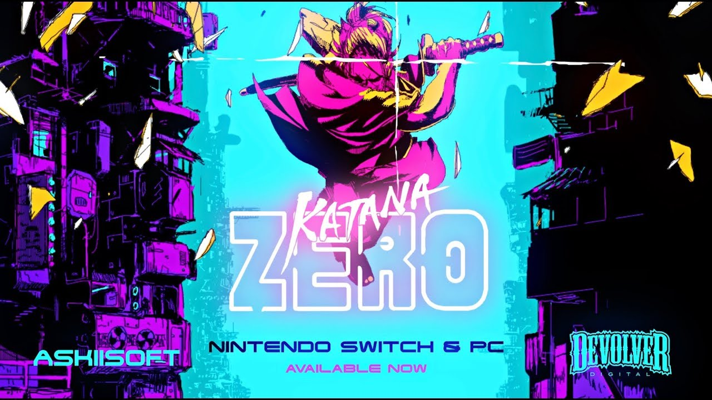
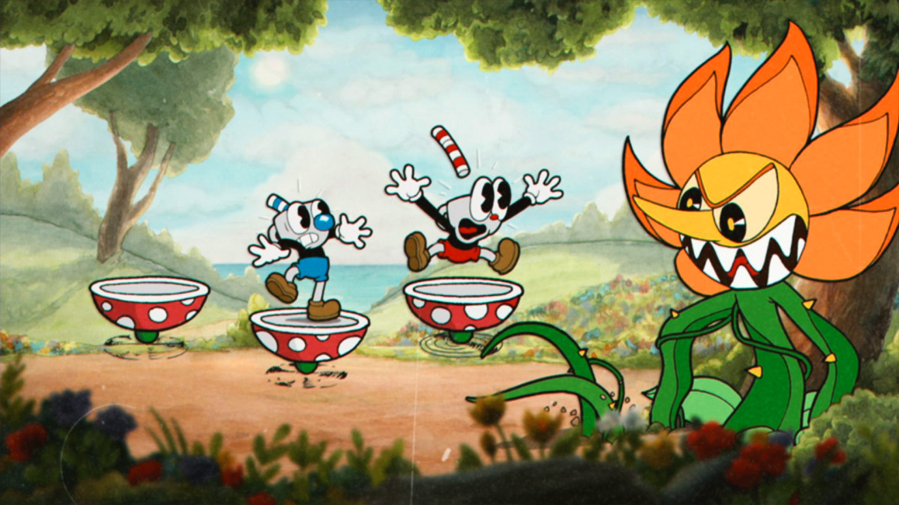
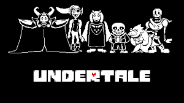

5 melhores jogos indie
Indies são jogos produzidos por pequenas empresas ou até mesmo por um grupo de amigos ou uma só pessoa. Eles se caracterizam por estilos simples de jogo, porém com um alto nível de carinho em seu desenvolvimento. O que mais encanta em jogos indies é a sua criatividade. Já que não podem competir com jogos AAA em qualidade, podem competir sendo criativos e levando o jogador a experiências que os grandes jogos não levaram.
Nesse pequeno blog de teste, pretendo apresentar, na minha opinião, quais são os 5 melhores jogos indie da atualidade.
Gris

Se um dia você já sonhou viver em um mundo de aquarela, Gris foi feito para você.
Focado na arte cativante, Gris trás uma gameplay 2D de plataforma em um mundo todo desenhado e pintado a mão. A história é contada sem palavras, apenas com a arte e a gameplay extremamente relaxante.
Nem todos podem se cativar facilmente por Gris, já que ele tira a gameplay frenética e rápida e a substitui por momentos de puzzle e contemplação, porém "tirar o fôlego" é o que melhor descreve o jogo.
Confira na Steam: Gris
Katana Zero
Talvez nem todos concordem, mas um jogo indie que me marcou muito pela sua incrível história e sua arte que mistura pixel art com um pouco de vaporwave foi Katana Zero.
Você é um ninja ou samurai contratado para trabalhos assassinos que mora em um apartamento triste e faz terapia todo dia, acho que essa introdução da história mostra exatamente o leque bizarro e criativo que esta pode tomar durante o jogo. Com uma gameplay fluída e rápida, Katana Zero também traz muita emoção em suas batalhas 2D, contra inúmeros inimigos ao mesmo tempo.
Cheio de detalhes e com um enfoque maior na narrativa misteriosa, Katana zero se torna uma ótima opção para passar horas jogando e quebrando a cabeça tentando compreender seu final, além disso, após o termino do jogo são liberados novos modos e uma missão de coletáveis que disponibiliza novas katanas.
Confira na Steam: Katana Zero
Cuphead
Jogar em um desenho dos anos 30 nunca foi tão divertido com Cuphead. Com diversas referências a desenhos daquela epóca, o jogo traz uma experiência completamente diferente da comum.
Dois irmãos chamados cuphead e mugman são enganados pelo diabo em um cassino e agora para manterem suas almas vão ter que pegar os contratos de almas dos devedores do diabo. Esse é o pedacinho de história que cuphead dá e te joga em um mundo focado em derrotar chefões (os devedores do diabo). Não se engane, o jogo é considerado por muitos um pesadelo de díficil, mas sua arte e diversão durante as fases mostra como um jogo díficil pode se tornar seu melhor amigo.
Com uma gameplay em plataforma 2D, Cuphead foca na batalha contra chefes com padrões e estilos próprios dando a impressão de uma gameplay completamente nova a cada novo chefe. Além disso pode ser jogado co-op com amigos, porém digo que não vai ser a experiência mais relaxante da sua vida.
Confira na Steam:Cuphead
Undertale
Louvado pelos fãs e pela crítica Undertale é um dos títulos com maior destaque dos últimos tempos, criado por apenas uma pessoa seu sucesso mostra como um jogo simples pode te levar a experiências que sinceramente nenhum outro jogo leva.
Não se intimide pelos gráficos pixel art simples, já que a beleza de undertale não está na arte visual, mas sim na arte de como contar uma boa história ou várias, já que o jogo se baseia em escolhas. O que deu mais fama ao jogo foi simplesmente sua narrativa, já que nenhum jogo indie consegue fazer personagens tão cativantes como Undertale.
Uma menção especial também a trilha sonora do jogo que é extremamente presente e impressionante, talvez você já tenha até ouvido falar da música megalovania que é a mais famosa do jogo.
Confira na Steam:Undertale
Hollow knight

Em primeiro lugar da lista está o louvadíssimo e impressionante Hollow knight. Todos os aspectos desse jogo ganham uma nota alta: gameplay, gráfico, história, criatividade todos esses levam o jogador a uma experiência diferenciada com jogos.
Sem foco aparente, Hollow knight revive os tempos de ouro dos metroidvania com fases interconectadas e um mundo incrível para se explorar. No começo do jogo talvez a frase que mais ecoe é "estou perdido" já que o jogo não te dá um objetivo espécifico e te joga em um mundo ao qual você tem que achar o caminho certo até o próximo boss e as próximas regiões.
Desenhado a mão e com uma história nas entrelinhas o jogo leva ao vício rapidamente, já que ele te aquece de curiosidade, com chefões misteriosos, regiões lindas e cativantes, uma história de díficil compreensão e um mundo cheio de conteúdo
Confira na Steam:Hollow knight